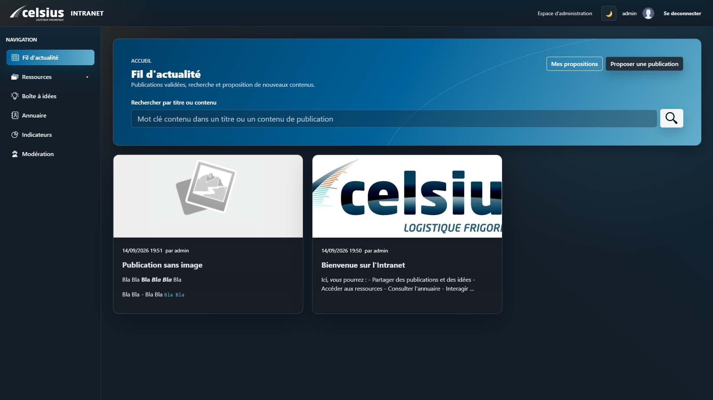
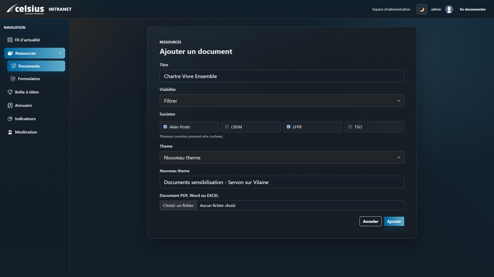
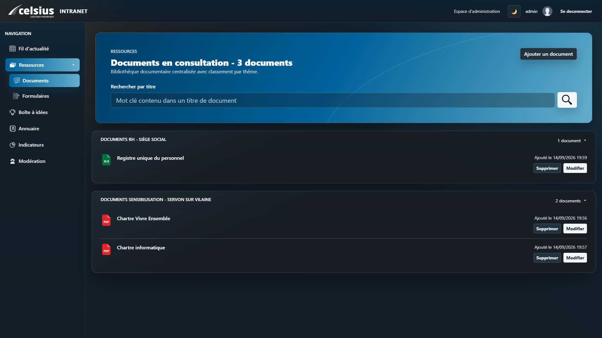
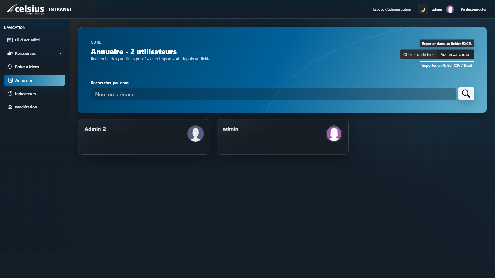

Stage en entreprise
Celsius - Développement d'un intranet - 6 semaines
1. Présentation de l'entreprise et formation
Contexte
Ce stage de six semaines s'est déroulé au sein du service informatique de Celsius, une entreprise spécialisée dans le transport frigorifique. La mission principale consistait à concevoir et développer une application web intranet pour centraliser la communication et les ressources internes.
Outils utilisés
Pendant ce stage, plusieurs outils ont été mis à ma disposition :
- Un laptop en dual-boot Ubuntu / Windows 11
- Une licence pour l'IDE PyCharm
- Un compte sur Udemy pour la formation Django
- Un compte Microsoft avec Office
- Un accès aux serveurs de l'entreprise (Gitea, BDD)
- Une licence Codex (IA) pour assister le développement dans PyCharm
Prise en main et formation
La première semaine a été dédiée à l'intégration : configuration du matériel, installation des logiciels, et visite des locaux. Une formation autonome sur Django (via Udemy) a permis d'acquérir les bases nécessaires pour le développement de l'intranet. Une réunion avec le tuteur et la DRH a permis d'identifier les besoins fonctionnels initiaux.
2. Spécifications techniques et cahier des charges
Analyse et conception
Présentation infrastructure réseau
Accès Gitea + base de données
Réunion DRH → besoins fonctionnels
Maquettes + modélisation des données
Après une présentation de l'infrastructure réseau de l'entreprise, les accès aux environnements de travail (Gitea, base de données) ont été configurés. Une réunion avec la DRH a permis d'affiner les besoins. Une veille sur des intranets existants a orienté les choix ergonomiques, et les premiers travaux de conception ont débuté avec la modélisation des données dans la base. Il sagissait ici d'une première version qui répondait aux quelques demande qui avaient été faite. Pendant le développement, avec l'ajout des fontionnalités, la base de données a évoluée et le schéma ci-dessous n'est plus vraiment représentatif.
Cahier des charges et fonctionnalités principales
Authentification LDAP
Fil d'actualité (CRUD + modération)
Espace documents (consultation + téléchargement)
Boîte à idées (vote, suggestions)
Gestion des droits (admin / utilisateur)
Réactions sur publications et idées
Profil utilisateur + photo + biographie
Annuaire des collaborateurs + export
Commentaires sur articles
Mode clair / sombre
Indicateurs RH (espace admin)
Le cahier des charges fonctionnel a été rédigé pour formaliser les attentes. Les fonctionnalités clés ont été définies : authentification LDAP, fil d'actualité avec modération, espace documents, boîte à idées, gestion des droits, profils utilisateurs, annuaire, et indicateurs RH. Un mode clair/sombre a été implémenté pour améliorer l'expérience utilisateur.
📄 Cahier des charges (PDF)
3. Développement, tests et déploiement
Semaines 3 et 4 : Développement des fonctionnalités
Le développement a débuté avec la mise en place de l'authentification LDAP, permettant aux collaborateurs de se connecter avec leurs identifiants habituels. Plusieurs fonctionnalités ont été implémentées : fil d'actualité (CRUD + modération), espace documents avec barre de recherche, boîte à idées soumise au vote, et un système de confirmation avant suppression.
L'interface a été enrichie avec des réactions sur les publications, des profils utilisateurs personnalisables (photo, biographie), un annuaire des collaborateurs avec export, et des commentaires sur les articles.
Améliorations et tests
Des ajustements visuels ont été apportés pour harmoniser l'interface, et les indicateurs RH ont été adaptés pour être spécifiques à chaque société. Le processus de synchronisation des utilisateurs a été optimisé pour utiliser les adresses email comme référence unique. L'expérience utilisateur sur mobile a été améliorée avec des ajustements de style.




Semaine 5 : Finalisation des fonctionnalités
L'annuaire des collaborateurs a été enrichi pour permettre aux administrateurs d'importer les profils des utilisateurs en amont. Les documents et formulaires ont été classés par thème, avec la possibilité d'en créer de nouveaux. L'export de la liste des utilisateurs a été restreint aux administrateurs pour garantir la confidentialité.
Les vignettes des profils utilisateurs affichent désormais directement l'email, le numéro de téléphone mobile et fixe. Des filtres par société ont été ajoutés pour limiter l'accès aux documents. Un champ optionnel a été intégré pour permettre une description détaillée des indicateurs RH.
Semaine 6 : Déploiement et ajustements
La première version de l'intranet a été mise en ligne, et la documentation technique a été rédigée pour le déploiement et les mises à jour futures. Une réunion avec l'équipe a permis de définir une charte graphique commune, appliquée à l'intranet : thème clair retravaillé, boutons restylisés, bannière personnalisée, et icônes ajoutées.
Un bouton flottant circulaire a remplacé le bouton "Retour" classique pour une navigation plus intuitive. Le filtrage par société a été retravaillé pour permettre l'association d'un document ou formulaire à plusieurs sociétés. Enfin, la documentation utilisateur a été rédigée, et le site a été mis à jour en ligne avec l'importation complète des utilisateurs.
Une fois la V1 de l'intranet finalisée, un document sous format Markdown a été réalisé avec Codex pour lister les spécifications techniques de l'application.
📄 Spécifications technique (Markdown)
Compétences développées
Ce stage m'a permis de monter en compétences sur Django et le développement web back-end en Python, de travailler avec un annuaire LDAP, de gérer un projet avec Gitea, et de conduire des réunions de recueil de besoins avec des interlocuteurs métier (DRH).
Bilan
En six semaines, j'ai conçu et livré une application intranet complète et fonctionnelle, couvrant des besoins variés : communication interne, gestion documentaire, annuaire, et outils RH. Ce projet m'a confronté à des contraintes réelles d'entreprise et m'a permis de travailler en autonomie tout en collaborant régulièrement avec mon tuteur et les équipes.